<!DOCTYPE html>
<html lang="en">
  <head>
    <meta charset="utf-8" />
    <meta name="viewport" content="width=device-width, initial-scale=1.0, maximum-scale=1.0, user-scalable=no" />

    <title>Associer vos documents et vos données avec QGIS</title>
    <link rel="shortcut icon" href="./favicon.ico" />
    <link rel="stylesheet" href="./dist/reset.css" />
    <link rel="stylesheet" href="./dist/reveal.css" />
    <link rel="stylesheet" href="./dist/theme/black.css" id="theme" />
    <link rel="stylesheet" href="./css/highlight/base16/zenburn.css" />

    <link rel="stylesheet" href="./css/oslandia.css" />

  </head>
  <body>
    <div class="reveal">
      <div class="slides"><section  data-markdown><script type="text/template">

<style>
img {
margin:0 !important;
vertical-align:top !important;
}
table td {
border-bottom: 0 !important;
padding-left: 0 !important;
vertical-align:top !important;
}
</style>

## Associer vos documents et vos données avec QGIS

Rencontres des Utilisateurs Francophones de QGIS<br/>
Clermont-Ferrand - 13/03/2023
</td><td></img></td>

Julien Cabieces / Jacky Volpes


</script></section><section  data-markdown><script type="text/template">
### Qui sommes nous ?

<table vertical-align="middle">
<tr><td></td>
<td>
Julien Cabieces<br/>
Developpeur C++/Python<br/>
QGIS Core committer<br/>
<em>@troopa81</em><br/>
<em>@CabiecesJ</em><br/>
<em>@CabiecesJ@mapstodon.space</em>
</td>
</tr>
</table>

<table vertical-align="middle">
<tr>
<td>
Jacky Volpes<br/>
Developpeur C++/Python<br/>
Contributeur coeur QGIS & Plugins<br/>
<em>@Djedouas</em><br/>
<em>@djedouas@mamot.fr</em>
</ul>
</td>
<td></td>
</tr>
</table>
</script></section><section  data-markdown><script type="text/template">
## Problématique

- **Besoin**: Associer des fichiers à de la donnée métier
  - Photo d’un vandalisme
  - Vidéo d’une canalisation lors d’un entretien
  - Manuel PDF d’un équipement (borne électrique)

- **Donnée**: stockée en base
  - ... ou pas (Fonctionne aussi avec des fichiers)

- **Documents**
  - En local sur le disque
  - Dans un répertoire partagé
  - Dans un système de GED (Gestion Électronique de Documents)

- Initié et financé par la métropole de Lille
</script></section><section  data-markdown><script type="text/template">
## But de de l'atelier

##### Comment lier ses données de base de données avec des documents ?

##### Comment configurer QGIS pour obtenir un workflow efficace ?
</script></section><section  data-markdown><script type="text/template">
## Cas d'utilisation

- Données : des monuments
- Documents : 
  - Photo
  - Vidéo
  - Page HTML de présentation

<br/>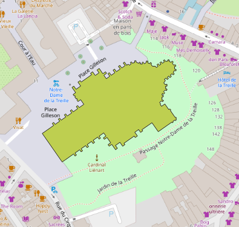

</script></section><section  data-markdown><script type="text/template">

## Le modèle de données

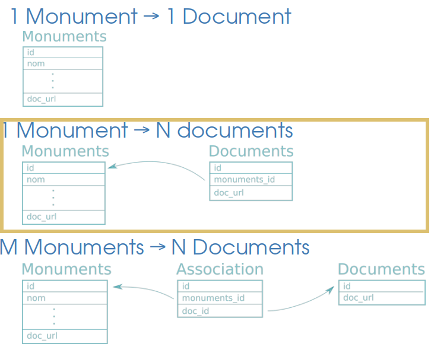
</script></section><section  data-markdown><script type="text/template">
## Initialiser le modèle de données

Créer la base
```shell
createdb qgis_docs
```

Vérifier que l'on peut s'y connecter
```shell
psql qgis_docs
```

Récupérer le fichier [external_storage.sql](external_storage.sql) et chargez le
```shell
psql qgis_docs -f external_storage.sql
```

Récupérer les documents [lille_docs.zip](lille_docs.zip)
</script></section><section  data-markdown><script type="text/template">
### 👀 Jetons un oeil au modèle de données

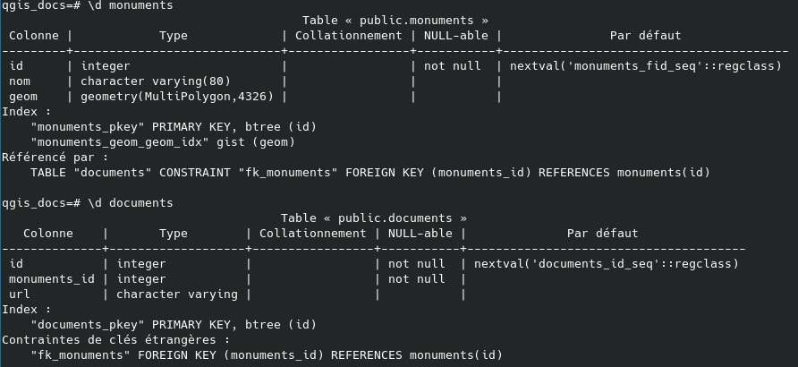
</script></section><section  data-markdown><script type="text/template">
### Et maintenant dans QGIS...

- On crée la connexion : *Explorateur > PostgreSQL > Nouvelle connexion...*
  - Nom: qgis_docs
  - Hôte: 127.0.0.1
  - port: 5432
  - Base de données: qgis_docs
  - **Authentification si pas en trust sur connexion locale**
  - ⚠️ Cocher *Lister les tables sans géométries*
  
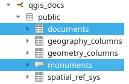
</script></section><section  data-markdown><script type="text/template">
### Et initialiser le projet ...

- Sélectionner les 2 tables *monuments* et *documents*
- Puis *Ajouter les tables sélectionnées au projet*
- **BONUS** Ajouter une couche OpenStreetMap
  - et changer le CRS du projet : **3857**
</script></section><section  data-markdown><script type="text/template">
### Découvrir les relations

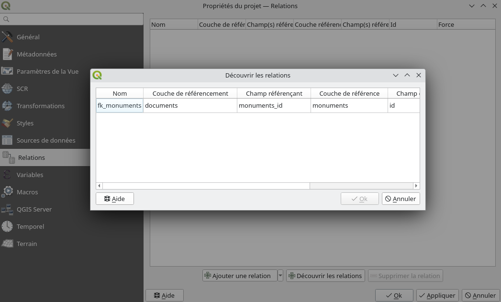

* *Projet > Propriétés > Relations*
* *Découvrir les relations*
* *Tout sélectionner > OK*
</script></section><section  data-markdown><script type="text/template">
### Configurer les sources de données

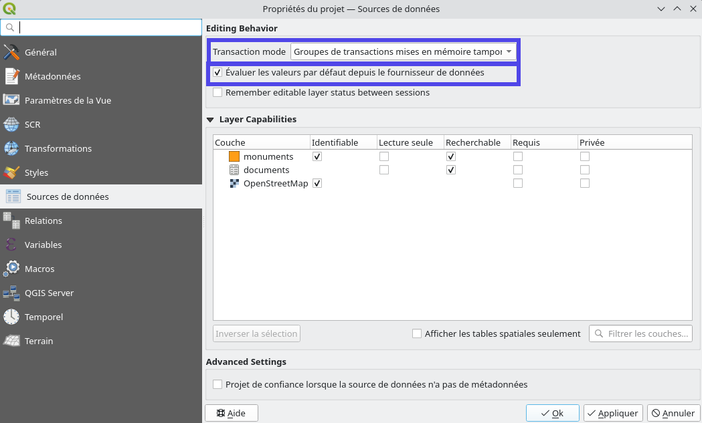

Pour plus de de détails voir l'atelier [QGIS & PostGIS Trucs & Astuces](https://troopa81.github.io/presentations/qgisuserfr_ws_postgis_qgis/ws_postgis_qgis.html#/) sur les relations
</script></section><section  data-markdown><script type="text/template">
### Configurer le formulaire monuments

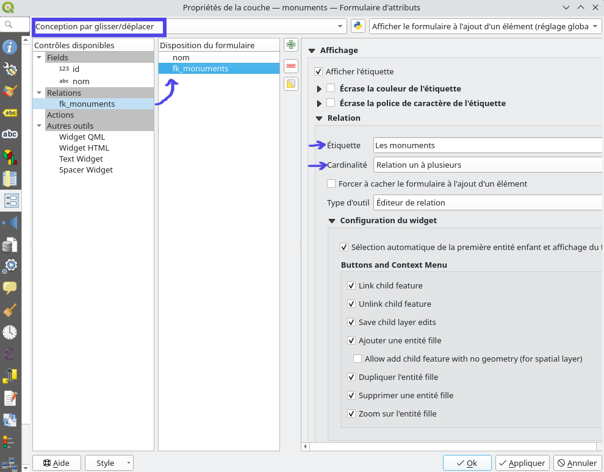
</script></section><section  data-markdown><script type="text/template">
## Ajouter un document

Depuis le formulaire monument

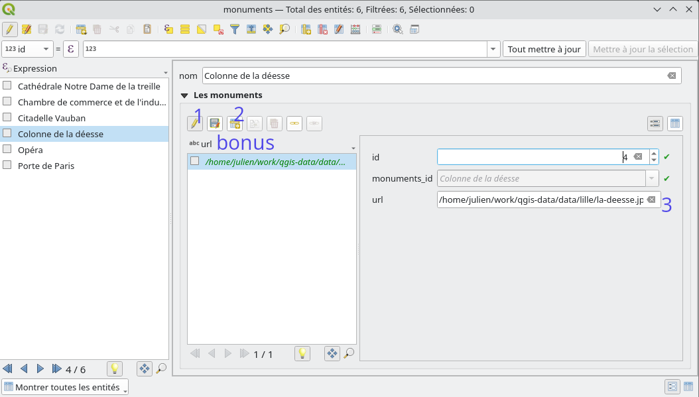
</script></section><section  data-markdown><script type="text/template">
## Améliorer l'intégration

Configurer le formulaire document

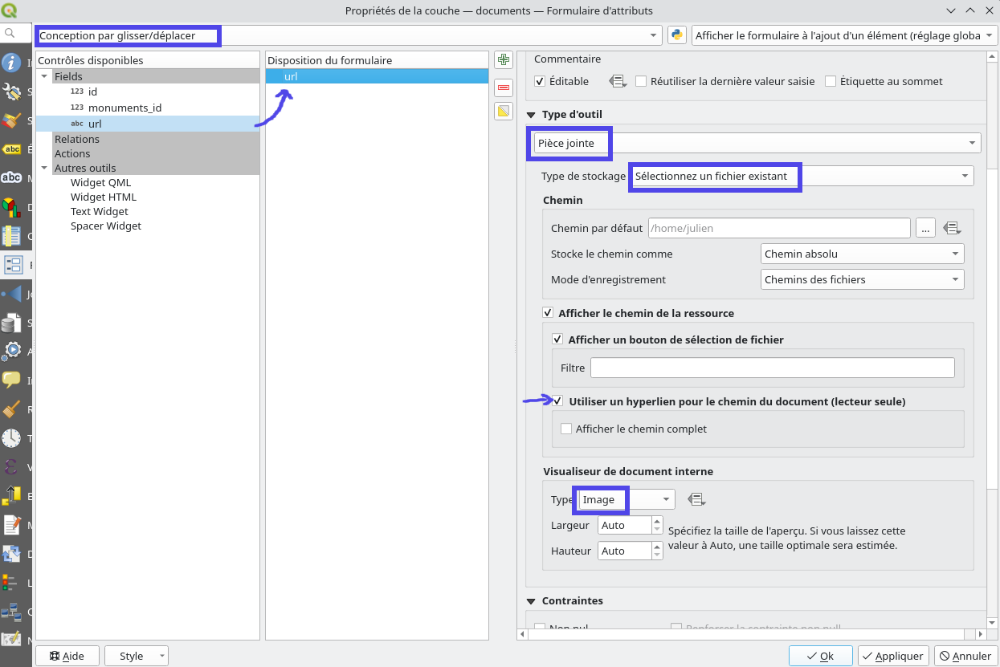
</script></section><section  data-markdown><script type="text/template">
### Améliorer l'intégration

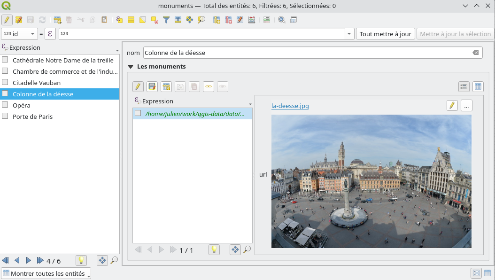
</script></section><section  data-markdown><script type="text/template">
### C'est bien mais pas top

- Il faut copier-coller le fichier au bon endroit
- Copier l'url
- Coller l'url
</script></section><section  data-markdown><script type="text/template">
## Configurer Copie simple

Choisir **Copie simple** comme type de stockage

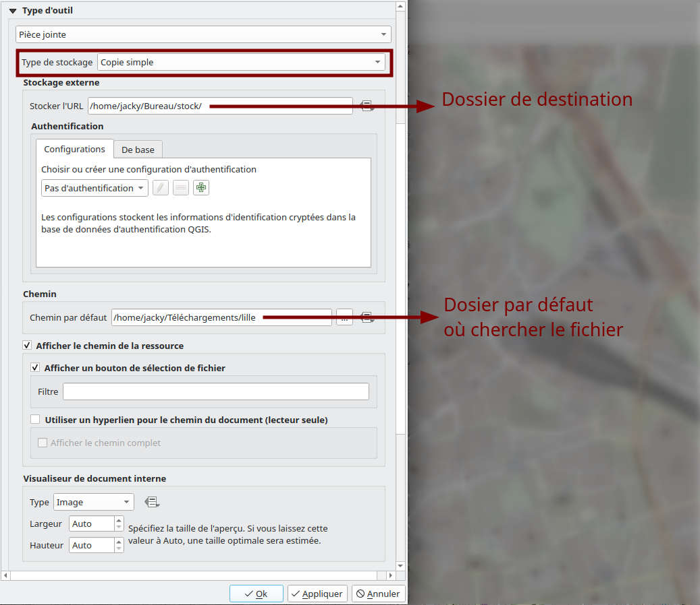
</script></section><section  data-markdown><script type="text/template">
### Fonctionnement Copie simple

Avec un répertoire centralisé (partagé dans l'idéal)

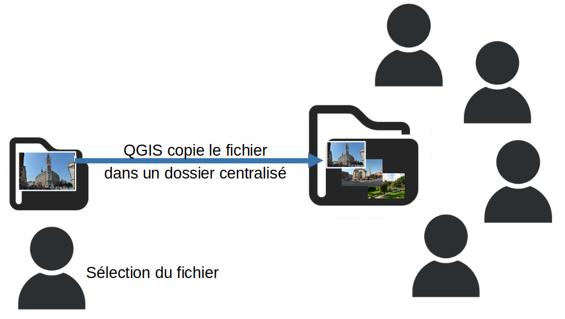
</script></section><section  data-markdown><script type="text/template">
### Formulaire Copie simple

Une fois le fichier sélectionné de n'importe où, il est copié
vers le dossier centralisé et accessible à tous


</script></section><section  data-markdown><script type="text/template">
### **Astuce** Ajout par glisser-déposer

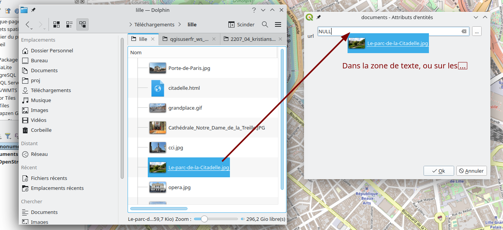
</script></section><section  data-markdown><script type="text/template">
## GED 

**G**estion **É**lectronique de **D**ocument

Les possibles:
- Nextcloud
- Minio
- Pydio
- Sharepoint

Protocoles :
- WebDAV
- S3
</script></section><section  data-markdown><script type="text/template">
## Nextcloud

- logiciel libre 
- 👉 site d'hébergement de fichiers 👈
- protocole WebDAV
- une plateforme de collaboration
- Forké de Owncloud en 2017

<br/>
<a href="https://nextcloud.com"></a>
</script></section><section  data-markdown><script type="text/template">
## Nextcloud

- Instance de test ici [http://ns6640565.ip-51-254-43.eu:4251](http://ns6640565.ip-51-254-43.eu:4251)
- temporaire, le temps du workshop
- Pour tester chez vous 🏠 :
  - [https://try.nextcloud.com/](https://try.nextcloud.com/)
  - Avec [docker](docker-compose-nextcloud.yml) ➡ disponible sur [http://localhost:8080](http://localhost:8080)
</script></section><section  data-markdown><script type="text/template">
### Configurer WebDAV

**N'importe quelle plateforme qui supporte le protocole WebDAV**

1. Choisir le type de stockage **WebDAV**
2. Entrer l'**URL de stockage** (slides suivantes pour un exemple avec Nextcloud)
3. Choisir ou créer une configuration d'authentification

<br/>
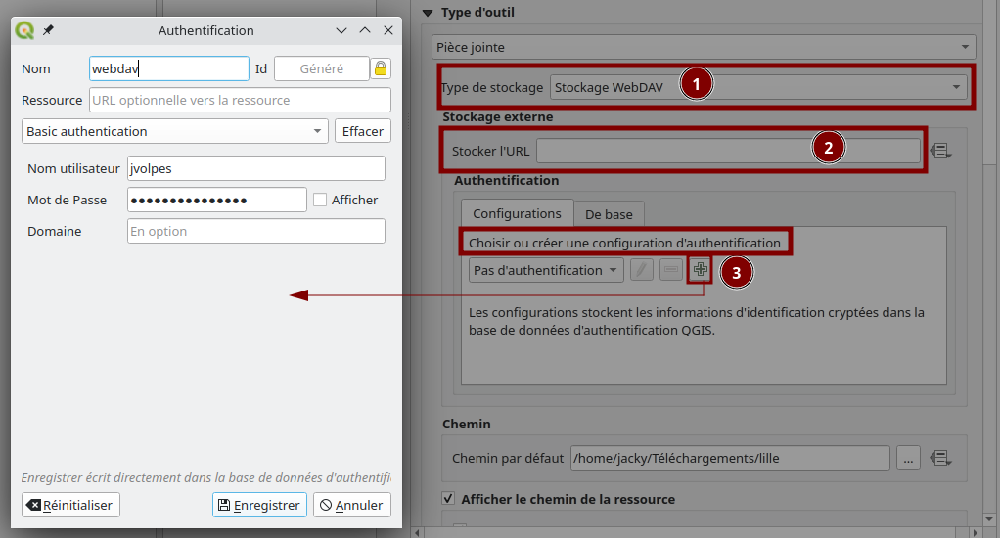
</script></section><section  data-markdown><script type="text/template">
### Nextcloud

1. Créer le dossier de stockage

<br/>
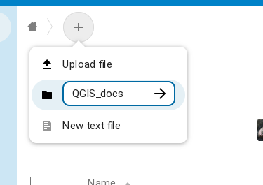
<br/>

2. Récupérer l'**URL de stockage**

<br/>

<br/>

3. La coller dans QGIS et y ajouter le nom du dossier créé

⚠️ terminer par un **/**
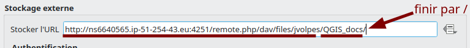
</script></section><section  data-markdown><script type="text/template">
## Les fichiers sont téléversés/téléchargés

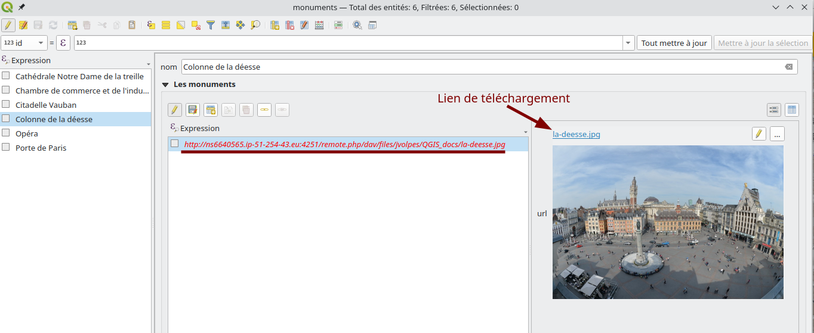
</script></section><section  data-markdown><script type="text/template">
## Visualiseur adaptable

Avec un expression basée sur l'extension du fichier :

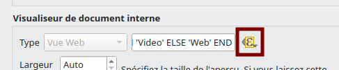

```
CASE
WHEN array_contains(array('png', 'jpg', 'jpeg', 'pdf'), lower(file_suffix("url")))
  THEN 'Image'
WHEN array_contains(array('mov', 'm4v', 'mp4', 'mkv'), lower(file_suffix("url")))
  THEN 'Video'
WHEN array_contains(array('mp3', 'aac'), lower(file_suffix("url")))
  THEN 'Audio'
ELSE 'Web'
END
```
</script></section><section  data-markdown><script type="text/template">
### Rangement dans des dossiers

Préparer les dossiers : version WebDAV

```python
# Remplacer par votre URL
url = "http://ns6640565.ip-51-254-43.eu:4251/remote.php/dav/files/jvolpes/docs_rangés/"

# pour chaque monument
for f in QgsProject.instance().mapLayersByName("monuments")[0].getFeatures():
    # créer le nom du dossier
    req = QNetworkRequest(QUrl(url + f["nom"].replace(" ", "_")))
    # s'authentifier
    QgsApplication.authManager().updateNetworkRequest(req, "41f34j4")
    # créer le dossier
    reply = QgsNetworkAccessManager.instance().sendCustomRequest(req, b"MKCOL")
```

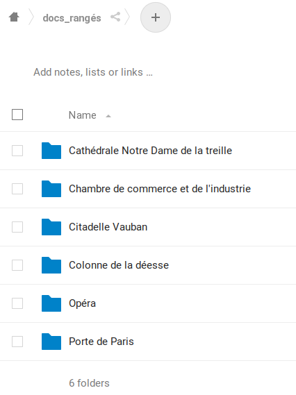
</script></section><section  data-markdown><script type="text/template">
## Rangement dans des dossiers

Paramétrer l'expression de stockage :

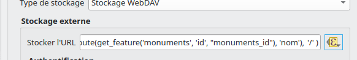

```
concat(
	-- L'URL de base vers le dossier principal
	'http://ns6640565.ip-51-254-43.eu:4251/remote.php/dav/files/jvolpes/docs_rangés/',
	
	-- Le nom du monument auquel ce document est lié, en remplaçant les espaces
	replace(attribute(get_feature('monuments', 'id', "monuments_id"), 'nom'), ' ', '_'),
	
	-- le / qui signifie que c'est un dossier
	'/'
)
```
</script></section><section  data-markdown><script type="text/template">
### Stockage sur S3 ⭐ New in 3.30 ⭐

Utilisation du stockage **Simple Service Storage** en **buckets** très utilisé dans le cloud.

Financé par la métropole de Lyon, dont les documents sont stockées avec ce protocole.
</script></section><section  data-markdown><script type="text/template">
### Stockage sur S3

⚠️ Il faut utiliser une authentification du type **AWS S3**

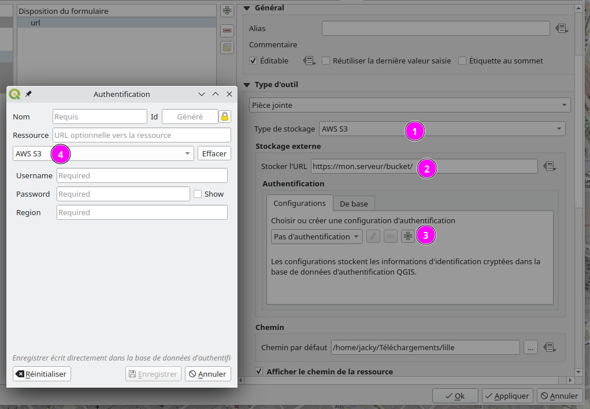
</script></section><section  data-markdown><script type="text/template">
### Quid de la suppression ?

- ⚠️ Pas de suppression du document si:
  - Supprime de l'entité
  - Vider/Change le champ **url**

- **Comportement désiré** ➡ fonctionnement GitHub/GitLab
</script></section><section  data-markdown><script type="text/template">
### Pourquoi ?

- un document peut être 
  - partagé entre entité (copier-collé d'URL entre entité)
  - partagé entre application.

- Il faudrait supprimer à la sauvegarde **UNIQUEMENT SI** la base est modifiée.
  - ➡ Danger d'incohérence
  - Quid si la base est accessible MAIS PAS le serveur de stockage!!
</script></section><section  data-markdown><script type="text/template">
### Comment Nettoyer

- Nettoyage régulier (cron)
  - Supprimer les orphelins
  - Juste aprés un backup des fichiers
- Sur trigger éventuellement ➡ Déconseillé
  - Si erreur, on peut perdre des fichiers
</script></section><section  data-markdown><script type="text/template">
### Comment trouver les orphelins

Lister les fichiers en base

```shell
qgis_docs=# select distinct url from documents;
                                                     url                                                     
-------------------------------------------------------------------------------------------------------------
 http://ns6640565.ip-51-254-43.eu:4251/remote.php/dav/files/jcabieces/QGISfrdays/cci.jpg
 http://ns6640565.ip-51-254-43.eu:4251/remote.php/dav/files/jcabieces/QGISfrdays/la-deesse.jpg
 http://ns6640565.ip-51-254-43.eu:4251/remote.php/dav/files/jcabieces/QGISfrdays/Le-parc-de-la-Citadelle.jpg
(3 lignes)
```

... Et sur l'espace de stockage fichier (WebDav dans l'exemple)

```shell
$curl -H "Depth:infinity" -u jcabieces:jcabieces2023$ -XPROPFIND http://ns6640565.ip-51-254-43.eu:4251/remote.php/dav/files/jcabieces/QGISfrdays/ | grep -oP "<d:href>\K[^<]*"
/remote.php/dav/files/jcabieces/QGISfrdays/
/remote.php/dav/files/jcabieces/QGISfrdays/cci.jpg
/remote.php/dav/files/jcabieces/QGISfrdays/grandplace.gif
/remote.php/dav/files/jcabieces/QGISfrdays/la-deesse.jpg
/remote.php/dav/files/jcabieces/QGISfrdays/Le-parc-de-la-Citadelle.jpg
/remote.php/dav/files/jcabieces/QGISfrdays/Porte-de-Paris.jpg
/remote.php/dav/files/jcabieces/QGISfrdays/test/
/remote.php/dav/files/jcabieces/QGISfrdays/test/twitter_logo.svg
```

Faire un diff, et appeller la commande DELETE sur WebDAV

</script></section><section  data-markdown><script type="text/template">

### Indexation des meta données

- Récupérer les méta-données depuis le service de stockage
  - taille
  - mime-type
  - dernier modifié
- Pour les stocker en base
- Pourquoi ? Recherche/statistiques/filtrage sur nos documents
  - Exemple: Quels sont les plus gros fichiers ?
</script></section><section  data-markdown><script type="text/template">
### Comment : Côté QGIS

Configurer les *Valeurs par défaut*

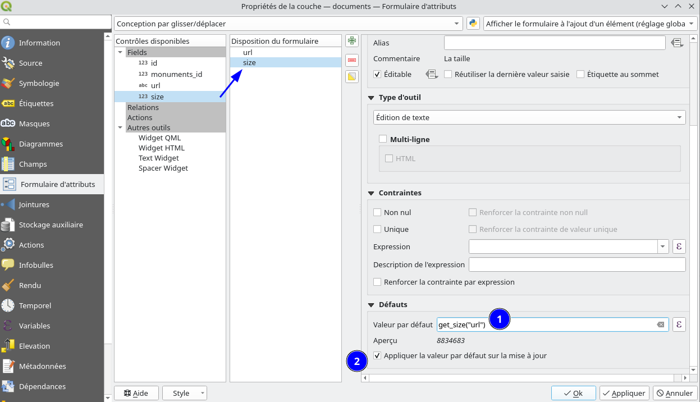
</script></section><section  data-markdown><script type="text/template">
### Comment : Côté QGIS

Configurer l'expression et utiliser du code Python

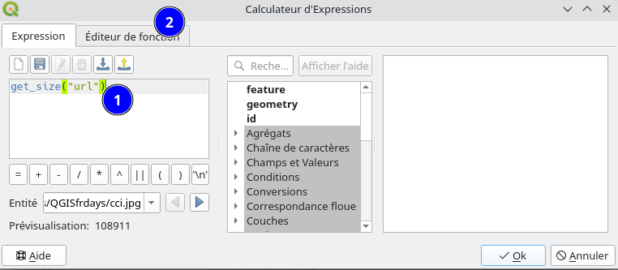
</script></section><section  data-markdown><script type="text/template">
### Comment : Côté QGIS

Utiliser le code Python suivant

```python
#Sample custom function file
from qgis.core import *
from qgis.gui import *

from qgis.PyQt.QtNetwork import QNetworkRequest
from qgis.PyQt.QtCore import QEventLoop, QUrl

@qgsfunction(args='auto', group='Custom')
def get_size(url, feature, parent):
    """
    retrieve file size using url
    """
    req = QNetworkRequest(QUrl(url))
    QgsApplication.authManager().updateNetworkRequest(req, "88r5vzl")
    
    loop = QEventLoop()
    reply = QgsNetworkAccessManager.instance().sendCustomRequest(req, b"PROPFIND")
    
    # wait for request to finished
    reply.finished.connect(loop.quit)
    loop.exec()
    
    rep = str(reply.readAll())
    match_tag = "getcontentlength"
    idx = rep.index(match_tag + ">")+len(match_tag)+1
    size=int(rep[idx:rep.index("<",idx)])
    return size
```
</script></section><section  data-markdown><script type="text/template">
### Comment : Côté base

- Un trigger sur insert, update
- Appel HTTP (avec [pgsql-http](https://github.com/pramsey/pgsql-http) ou urllib dans PL/Python)
- Avantages:
  - Base épaisse 👍
  - Multi-application / Pas spécifique QGIS
- Inconvénient:
  - Disponible uniquement aprés enregistrement en base
</script></section><section  data-markdown><script type="text/template">
## Du développement sur mesure ?

<div align="left">

Il est possible de développer **son propre gestionnaire de stockage externe** en Python.

Il faut hériter de la classe *QgsExternalStorage*, et implémenter les méthodes :
- de stockage de la ressource
- de récupération de la ressource

Il est alors possible de gérer :
- des **authentifications** particulières
- des pré-traitements (renommage de fichiers par exemple)
- des appels à une **API**
- des arborescences de stockage particulières

</div>
</script></section><section  data-markdown><script type="text/template">
## Du développement sur mesure ?

Exemple du plugin NGP Connect utilisant une API sur mesure

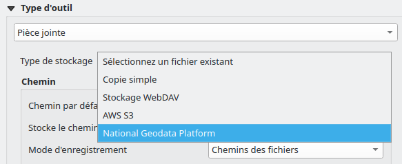
</script></section><section  data-markdown><script type="text/template">
## Si plusieurs types d'objets

- Ex : doc des monuments, doc sur les fleuves, doc sur les magasins
- Le mieux : Une table document par objet
- Sinon : relation polymorphiques
</script></section><section  data-markdown><script type="text/template">
## A venir...

- Stocker/Ouvrir des projets
- Rendu des photos dans la carte
- **D'autre idées ?**

💵Besoin de financements💵
</script></section><section  data-markdown><script type="text/template">
# Questions 

Rencontres des Utilisateurs Francophones de QGIS<br/>
Clermont-Ferrand - 13/03/2023
</td><td></img></td>

Julien Cabieces / Jacky Volpes


</script></section></div>
    </div>

    <script src="./dist/reveal.js"></script>

    <script src="./plugin/markdown/markdown.js"></script>
    <script src="./plugin/highlight/highlight.js"></script>
    <script src="./plugin/zoom/zoom.js"></script>
    <script src="./plugin/notes/notes.js"></script>
    <script src="./plugin/math/math.js"></script>
    <script>
      function extend() {
        var target = {};
        for (var i = 0; i < arguments.length; i++) {
          var source = arguments[i];
          for (var key in source) {
            if (source.hasOwnProperty(key)) {
              target[key] = source[key];
            }
          }
        }
        return target;
      }

      // default options to init reveal.js
      var defaultOptions = {
        controls: true,
        progress: true,
        history: true,
        center: true,
        transition: 'default', // none/fade/slide/convex/concave/zoom
        plugins: [
          RevealMarkdown,
          RevealHighlight,
          RevealZoom,
          RevealNotes,
          RevealMath
        ]
      };

      // options from URL query string
      var queryOptions = Reveal().getQueryHash() || {};

      var options = extend(defaultOptions, {}, queryOptions);
    </script>


    <script>
      Reveal.initialize(options);
    </script>
  </body>
</html>
